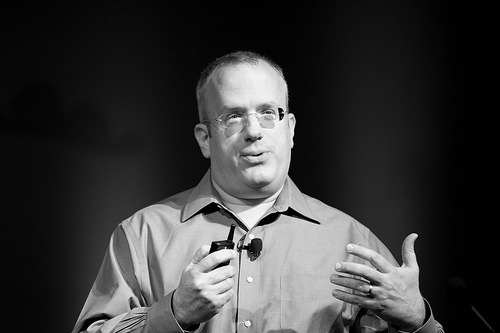
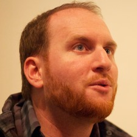

People Working on TC39
| Erik Arvidsson | ||
| Gavin Barraclough | Apple | |
| Nebojša Ćirić | ||
| Doug Crockford | eBay | |
|  | Brendan Eich | Mozilla |
| Stephan Herhut | Intel | |
|  | Dave Herman | Mozilla |
| Luke Hoban | Microsoft | |
| Rick Hudson | Intel | |
| Oliver Hunt | Apple | |
| Waldemar Horwat | ||
| Yehuda Katz | jQuery Foundation | |
| Norbert Lindenberg | ||
| Mark Miller | ||
| Andreas Rossberg | ||
| Alex Russell | ||
| Bill Ticehurst | Microsoft | |
| Sam Tobin-Hochstadt | Northeastern University | |
| Tom Van Cutsem | Vrije Universiteit Brussel | |
| Rick Waldron | jQuery Foundation | |
| Allen Wirfs-Brock | Mozilla |